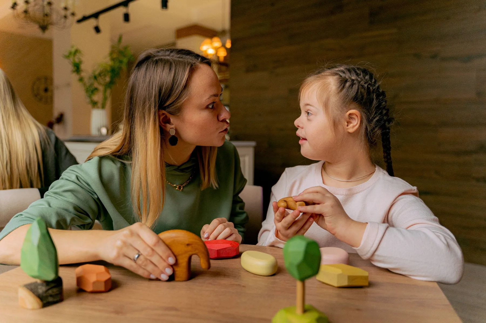

ФокусНайкращі інтереси дитини
Рівний державний захист незалежно від статусу батьків.
Публічна експертна зустріч · законопроєкт №15057

17.07.2026 відбулося публічне обговорення законопроєкту №15057 за участю родин військовослужбовців, правозахисної, медичної, реабілітаційної, соціальної та експертної спільнот. За результатами зустрічі ми ухвалили спільну резолюцію на підтримку рівного державного захисту дітей з інвалідністю незалежно від статусу їхніх батьків.
Приєднатися до резолюції
Завантажте шаблон, внесіть усі необхідні дані, підпишіть заяву одним із двох способів і додайте готовий файл до форми.
Про нас
ГО «Майбутнє має право» об’єднує родини військовослужбовців, які виховують неповнолітніх дітей з інвалідністю, а також фахівців і небайдужих громадян, готових працювати задля рівного захисту прав дітей.
Наша першочергова робота зосереджена на законопроєкті №15057 та правовій колізії, через яку дитина з інвалідністю може фактично втрачати рівний обсяг державного захисту після мобілізації одного з батьків. Ми діємо позапартійно й спираємося на юридичну, медичну, соціальну та експертну аргументацію.
Рівний державний захист незалежно від статусу батьків.
Юридична, медична, соціальна та експертна оцінка.
Усунення правової колізії та недискримінації дітей.
Матеріали в медіа
Публікації, інтерв’ю, відеосюжети та матеріали про родини військовослужбовців, які виховують дітей з інвалідністю, і необхідність підтримки законопроєкту №15057.
Матеріал про правову нерівність, із якою стикаються родини, що виховують дітей з інвалідністю.
Публікація про проблему нерівного захисту дітей з інвалідністю після мобілізації одного з батьків.
Історія родини, яка потребує постійної участі батька у догляді за двома дітьми з інвалідністю.
Матеріал про відчай родини та вимогу забезпечити рівні державні гарантії для дітей з інвалідністю.
Відео про проблему звільнення зі служби батьків, чиї діти потребують постійного догляду.
Матеріали про щоденний догляд за дітьми з інвалідністю та потребу родин у фізичній присутності батька.
Історія мами, яка самостійно забезпечує лікування, реабілітацію та постійний догляд за дітьми.
Публічна позиція представників батьківської спільноти щодо необхідності усунути правову нерівність.
Серія матеріалів про різницю між правом на відстрочку та можливістю звільнення з військової служби, а також про заклик підтримати законопроєкт №15057.
Матеріал про правову колізію, через яку однакові сімейні обставини мають різні юридичні наслідки.
Серія правових матеріалів про неможливість звільнення військовослужбовців за сімейними обставинами та втрату сімейних гарантій після мобілізації.
Публікація про необхідність реального, а не формального захисту дітей з інвалідністю.
Матеріали про правову колізію та становище родин, у яких діти з інвалідністю залишаються без допомоги батька.
Законопроєкт
Законопроєкт №15057 спрямований на усунення неузгодженості між нормами про право на відстрочку для батьків дітей з інвалідністю та правом на звільнення з військової служби для тих батьків, які вже проходять службу.
Наші історії
Реальні історії мам, які самостійно забезпечують догляд, лікування, реабілітацію та постійний супровід дітей з інвалідністю, поки батько проходить військову службу.
Ключовий висновок
Документ · PDF
На мобільному пристрої документ відображається сторінками по ширині екрана. Також його можна відкрити окремо або завантажити.
Документ · PDF
На мобільному пристрої документ відображається сторінками по ширині екрана. Також його можна відкрити окремо або завантажити.